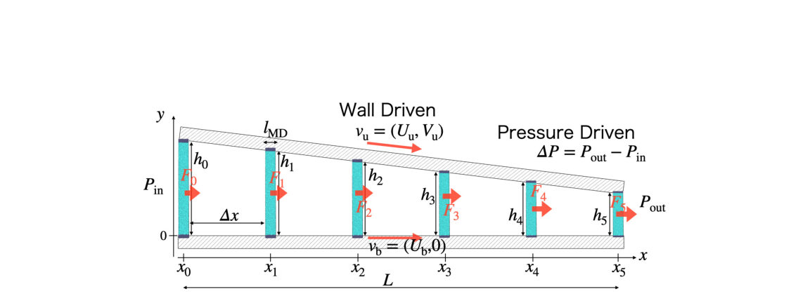
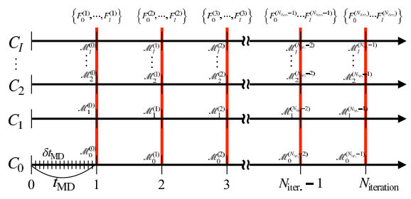

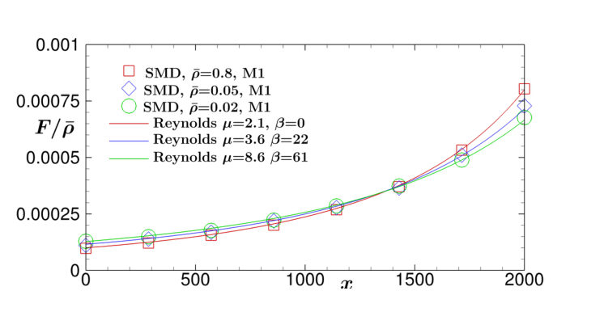
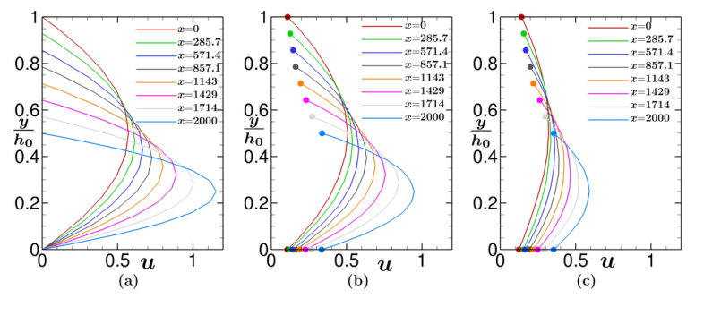

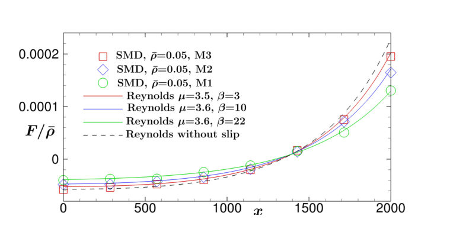
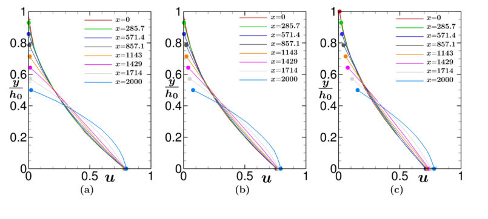
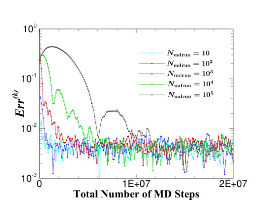
228 papers · 49 relevant · 5 highlighted
Every paper with at least one nonzero topic score, sorted by best-matching score. 🔥 marks scores ≥4/5. Click the title to jump to the full entry below; click [arXiv] to open the paper page. (secondary) marks papers from de-prioritized cond-mat archives.
analog quantum simulation 5/5 · 🔥 exotic spin models in light-matter 4/5 · 🔥 non-equilibrium dynamics 4/5 · entanglement & information structure 3/5 · QC/QI experiment 2/5 · non-equilibrium universality 2/5 · quantum measurements 2/5free-space correlated emission 5/5 · 🔥 Dicke superradiance 4/5 · 🔥 correlated / nonlocal dissipation 4/5 · methods for driven-dissipative 2/5 · non-equilibrium universality 2/5quantum optics experiment 5/5 · 🔥 QC/QI experiment 4/5 · interference shaping light 3/5 · entanglement & information structure 2/5 · quantum measurements 2/5spintronics-quantum-optics interface 5/5 · 🔥 entanglement & information structure 4/5 · Tavis-Cummings & cavity-many-emitter 2/5 · correlated / nonlocal dissipation 2/5QC/QI experiment 5/5 · 🔥 entanglement & information structure 4/5 · quantum measurements 2/5scars & prethermalization 5/5 · entanglement & information structure 3/5 · non-equilibrium dynamics 3/5measurement-induced transitions 4/5 · 🔥 quantum measurements 4/5 · driven-dissipative phase transition 3/5 · non-equilibrium universality 3/5 · Keldysh / 2PI / non-Gaussian methods 2/5 · entanglement & information structure 2/5 · methods for driven-dissipative 2/5 · non-equilibrium dynamics 2/5correlated cavity matter 4/5 · 🔥 entanglement & information structure 4/5 · Keldysh / 2PI / non-Gaussian methods 3/5 · spintronics-quantum-optics interface 3/5 · Tavis-Cummings & cavity-many-emitter 2/5 · analog quantum simulation 2/5 · correlated / nonlocal dissipation 2/5 · exotic spin models in light-matter 2/5non-equilibrium dynamics 4/5 · Kondo & dissipative impurity 3/5 · analog quantum simulation 3/5 · entanglement & information structure 3/5 · Keldysh / 2PI / non-Gaussian methods 2/5 · non-equilibrium universality 2/5non-equilibrium universality 4/5 · Tavis-Cummings & cavity-many-emitter 3/5 · non-equilibrium dynamics 3/5 · analog quantum simulation 2/5 · correlated cavity matter 2/5 · entanglement & information structure 2/5entanglement & information structure 4/5 · 🔥 non-equilibrium dynamics 4/5 · non-equilibrium universality 3/5 · scars & prethermalization 3/5methods for driven-dissipative 4/5 · driven-dissipative phase transition 3/5 · non-equilibrium dynamics 3/5 · correlated / nonlocal dissipation 2/5 · entanglement & information structure 2/5(secondary) — 🔥 quantum optics experiment 4/5 · correlated cavity matter 3/5 · QC/QI experiment 2/5 · Tavis-Cummings & cavity-many-emitter 2/5 · analog quantum simulation 2/5non-equilibrium dynamics 4/5 · methods for driven-dissipative 3/5 · Keldysh / 2PI / non-Gaussian methods 2/5 · driven-dissipative phase transition 2/5 · non-equilibrium universality 2/5correlated / nonlocal dissipation 4/5 · quantum measurements 3/5 · Tavis-Cummings & cavity-many-emitter 2/5 · entanglement & information structure 2/5 · methods for driven-dissipative 2/5Kondo & dissipative impurity 4/5 · 🔥 methods for driven-dissipative 4/5 · non-equilibrium dynamics 3/5 · Keldysh / 2PI / non-Gaussian methods 2/5non-equilibrium dynamics 4/5 · analog quantum simulation 3/5 · methods for driven-dissipative 3/5 · driven-dissipative phase transition 2/5QC/QI experiment 4/5 · 🔥 quantum optics experiment 4/5 · interference shaping light 2/5 · spintronics-quantum-optics interface 2/5quantum measurements 4/5 · correlated / nonlocal dissipation 2/5 · entanglement & information structure 2/5 · methods for driven-dissipative 2/5 · non-equilibrium dynamics 2/5correlated / nonlocal dissipation 4/5 · methods for driven-dissipative 3/5 · entanglement & information structure 2/5 · non-equilibrium dynamics 2/5non-equilibrium dynamics 4/5 · methods for driven-dissipative 3/5 · driven-dissipative phase transition 2/5 · entanglement & information structure 2/5entanglement & information structure 4/5 · 🔥 non-equilibrium dynamics 4/5 · driven-dissipative phase transition 2/5analog quantum simulation 4/5 · 🔥 non-equilibrium dynamics 4/5 · exotic spin models in light-matter 2/5(secondary) — 🔥 QC/QI experiment 4/5 · 🔥 quantum optics experiment 4/5 · interference shaping light 2/5non-equilibrium dynamics 4/5 · non-equilibrium universality 3/5 · Keldysh / 2PI / non-Gaussian methods 2/5correlated / nonlocal dissipation 4/5 · non-equilibrium dynamics 3/5 · methods for driven-dissipative 2/5entanglement & information structure 4/5 · non-equilibrium dynamics 3/5 · spintronics-quantum-optics interface 2/5quantum measurements 4/5 · methods for driven-dissipative 3/5 · non-equilibrium dynamics 2/5quantum optics experiment 4/5 · QC/QI experiment 3/5 · quantum measurements 2/5QC/QI experiment 4/5 · 🔥 quantum optics experiment 4/5entanglement & information structure 4/5 · methods for driven-dissipative 2/5 · quantum measurements 2/5quantum measurements 4/5 · entanglement & information structure 2/5 · non-equilibrium dynamics 1/5entanglement & information structure 4/5 · non-equilibrium dynamics 2/5QC/QI experiment 4/5 · spintronics-quantum-optics interface 2/5QC/QI experiment 4/5 · methods for driven-dissipative 2/5interference shaping light 4/5 · quantum measurements 2/5entanglement & information structure 4/5 · quantum measurements 2/5quantum measurements 4/5 · methods for driven-dissipative 2/5scars & prethermalization 4/5 · non-equilibrium dynamics 2/5interference shaping light 4/5 · non-equilibrium dynamics 2/5analog quantum simulation 4/5 · non-equilibrium dynamics 2/5QC/QI experiment 4/5 · quantum measurements 1/5QC/QI experiment 4/5 · quantum measurements 1/5methods for driven-dissipative 4/5QC/QI experiment 4/5QC/QI experiment 4/5QC/QI experiment 4/5QC/QI experiment 4/5entanglement & information structure 4/5Papers by authors on your watch list. Click the title to jump to the full entry below; click [arXiv] to open the paper page.
Papers from quant-ph and your primary cond-mat archives (quant-gas, stat-mech, str-el, dis-nn). Highlighted papers (⭐) come first, then everything else sorted by topic-relevance score, highest first.
Authors: Shugo Yasuda, Kotaro Oda, Fumito Muragaki, Yuta Taketa, Masashi Iwayama, Tomohide Ina
Type: theory · Category: numerical methods · PDF: https://arxiv.org/pdf/2604.24138v1
Analysis basis: full PDF text, analyzed in chunks







Main problem. Predicting the flow of complex fluids (polymers, colloids) in thin-layer geometries where constitutive relations and boundary conditions, such as slip, are unknown and difficult to establish.
Main result. The proposed SMD method successfully captures shear-thinning and polymer conformation dynamics in polymeric flows and validates against modified Reynolds equations for Newtonian fluids.
Method. A multiscale Synchronized Molecular Dynamics (SMD) method that couples local MD cells with a macroscopic lubrication description by iteratively updating external forces to satisfy continuity.
Summary. This paper introduces the Synchronized Molecular Dynamics (SMD) method, a multiscale computational technique for simulating complex fluid flows in thin channels. By coupling local molecular dynamics simulations with a macroscopic lubrication model, the method bypasses the need for predefined constitutive equations. It is validated against known Newtonian models and successfully demonstrates the ability to capture complex phenomena like shear-thinning and polymer stretching. This provides an efficient way to study micro-to-macro transport properties in complex fluids.
Model / system. Thin-layer/film flows in high-aspect-ratio channels (e.g., wedge-shaped) using Lennard-Jones fluids for validation and the Kremer-Grest chain model for polymeric liquids.
Key observables. Cross-sectional velocity profiles, streamwise pressure distribution, polymer conformation dynamics (bond orientation tensor), and slip velocity/length.
Important parameters / regimes. Reynolds number (Re << 1), aspect ratio (epsilon << 1), Weissenberg number, fluid density, and fluid-wall interaction strength.
Assumptions / limitations. Laminar, incompressible flow in the lubrication limit (low Reynolds number and thin-layer geometry) where scales can be separated.
Figures summary. Figure 1 shows the MD cell geometry; Figure 2 illustrates the SMD iteration scheme; Figure 3 shows the MPI parallelization hierarchy; Figures 9-13 present error analysis, force distributions, and velocity profiles for polymeric vs. Newtonian fluids.
Paper structure. Introduction of the problem -> Description of the SMD multiscale framework and implementation -> Validation using LJ fluids and slip analysis -> Application to polymeric fluids and non-Newtonian effects -> Appendix with lubrication theory derivation.
We propose a multiscale computational method for thin-layer flows of complex fluids, termed the synchronized molecular dynamics (SMD) method, which directly couples local molecular dynamics (MD) simulations with a macroscopic lubrication description. In thin layers, the flow can be decomposed into cross-sectional dynamics that are strongly influenced by interfacial effects, and streamwise transport along the channel. The SMD method exploits this separation of scales by sparsely distributing local MD cells along the channel and synchronizing them through macroscopic conservation laws. In this framework, the macroscopic continuity equation is enforced by iteratively updating the external forces applied to each MD cell, thereby allowing the cross-sectional velocity profiles and the streamwise pressure distribution to be obtained without prescribing constitutive relations or boundary conditions. The method is validated for pressure-driven and wall-driven flows of Lennard--Jones fluids in a wedge-shaped channel, demonstrating excellent agreement with a modified Reynolds equation that accounts for boundary slip. The SMD method is further applied to polymeric lubrication flows modeled by the Kremer--Grest chain model. At large pressure differences, the present approach naturally captures pronounced shear-thinning behavior coupled with microscopic polymer conformation dynamics. The results demonstrate that the SMD method provides an efficient and physically consistent framework for the multiscale simulation of complex fluid thin-layer flows.
Authors: Haohao Sheng, Sheng Zhang, Zhong Fang, Hongming Weng, Zhijun Wang
Type: theory · Category: other · PDF: https://arxiv.org/pdf/2604.23969v1
Analysis basis: full PDF text, analyzed in chunks
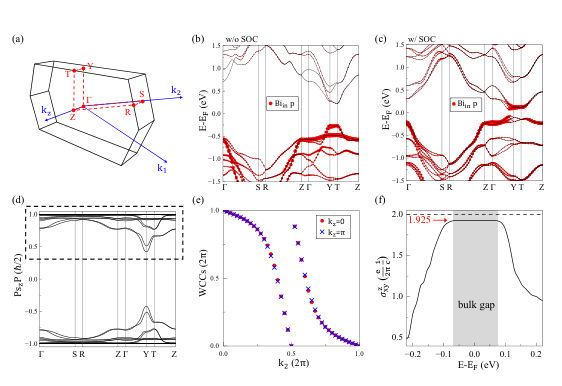
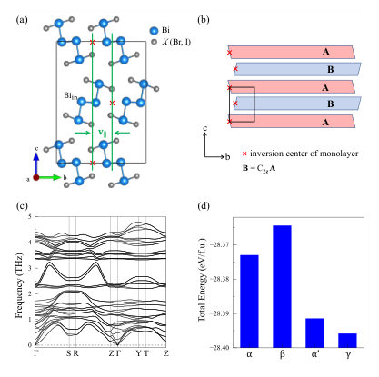
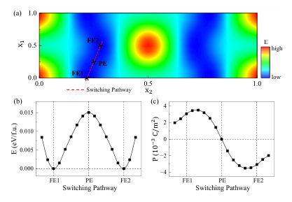
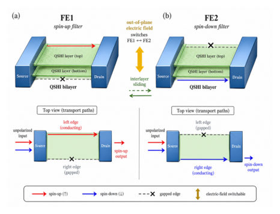
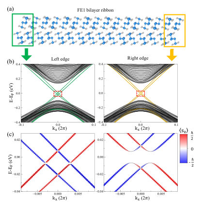
Main problem. The search for intrinsic 3D topological ferroelectric insulators that possess sizable band gaps and robust band topology, overcoming the limitations of 2D heterostructures and unstable 3D candidates.
Main result. The prediction of a new gamma-phase of bismuth monohalides (Bi4Br4 and Bi4I4) that acts as a 3D quantum spin Hall insulator with switchable ferroelectric polarization.
Method. First-principles calculations, including phonon spectrum and ab initio molecular dynamics for stability, and spin-resolved Wilson loops to calculate the spin Chern number.
Summary. The paper predicts a new class of 3D topological ferroelectric insulators using bismuth monohalides (Bi4Br4 and Bi4I4). These materials feature a 3D quantum spin Hall insulator state that remains robust during ferroelectric switching via interlayer sliding. The researchers demonstrate that the polarization can be controlled with a low energy barrier, enabling the design of an electrically controlled spin-filter device. This provides a promising platform for developing new nonvolatile spintronic technologies.
Model / system. A 3D van der Waals layered structure of bismuth monohalides (Bi4X4, where X=Br, I) in the noncentrosymmetric Cmc2_1 space group.
Key observables. Spin Chern number (Csz = 2), spin Hall conductivity, bulk polarization, and energy barrier for ferroelectric switching.
Important parameters / regimes. Band gap of ~0.15 eV with SOC, ferroelectric switching energy barrier of 15 meV/f.u., and spin Hall conductivity of ~1.925 (e^2/2pi c).
Assumptions / limitations. The study assumes the stability and synthesizability of the predicted gamma-phase based on density functional theory calculations.
Figures summary. Fig 1 shows the crystal structure, vdW stacking, phonon spectrum, and phase energies; Fig 2 shows the Brillouin zone, band structures with and without SOC, and the evolution of Wannier charge centers.
Paper structure. The paper introduces the motivation for 3D topological ferroelectrics, presents the predicted structure and stability of Bi4X4, characterizes its topological properties via spin Chern numbers, demonstrates the ferroelectric switching mechanism, and proposes a spin-filter device application.
Three-dimensional (3D) topological ferroelectric (FE) insulators, in which topological and FE orders naturally coexist, enable field-controlled spintronic devices. In this work, we predict a new structure of bismuth monohalides Bi4Br4 and Bi4I4, denoted $γ$ phase, and demonstrate that it is an ideal 3D topological FE insulator. Systematic first-principles calculations confirm the stability and synthesizability of $γ$-Bi4X4 (X=Br, I). Although the noncentrosymmetric $γ$ phase crystallizes in the space group $Cmc2_1$ with no symmetry-based classifications/indicators, the nontrivial topology can be characterized by the spin Chern number (SCN). Spin-resolved Wilson loops show the $s_z$ SCN $C_{s_z}=2$, indicating the spin-resolved topology of a 3D quantum spin Hall insulator state. The $z$-direction polarization can be switched by interlayer sliding, requiring only crossing a small energy barrier. Finally, we design an electrically controlled spin-filter device on bilayer films that can generate a switchable spin-polarized current. Combining a single-phase crystal, a sizable band gap, and robust band topology against FE switching, these bismuth monohalides serve as a prototype of intrinsic 3D topological FE insulators, providing an ideal platform for realizing new nonvolatile functionalities in spintronic devices.
Authors: Naveen Dinujaya, Suhas Eswarappa Prameela
Type: both · Category: other · PDF: https://arxiv.org/pdf/2604.23143v1
Analysis basis: full PDF text, analyzed in chunks
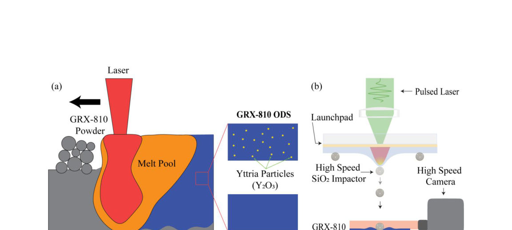
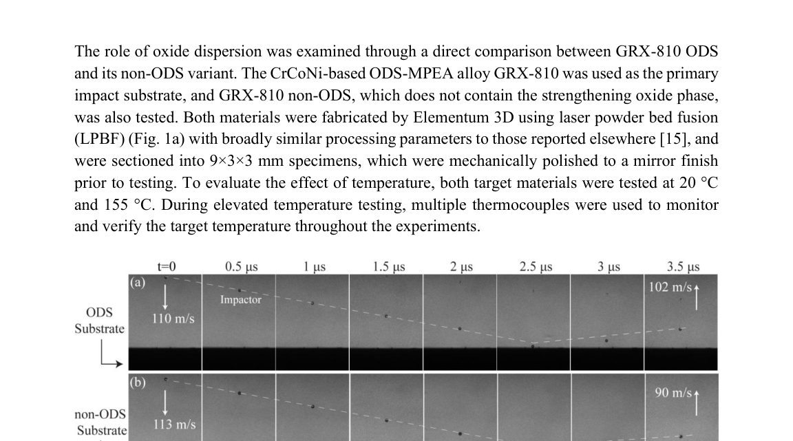
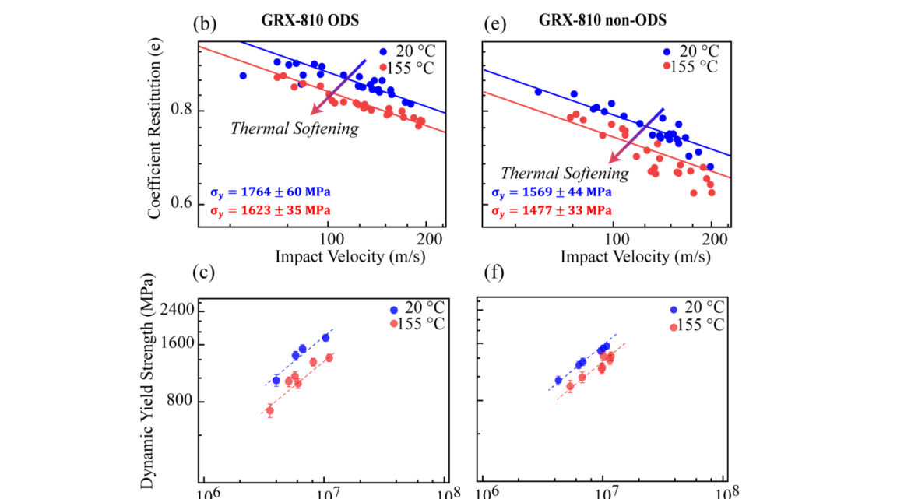
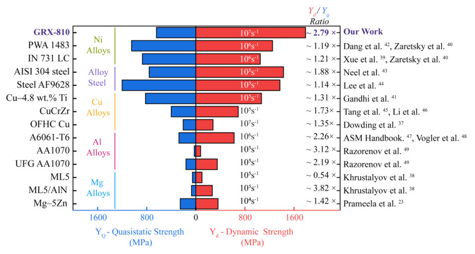
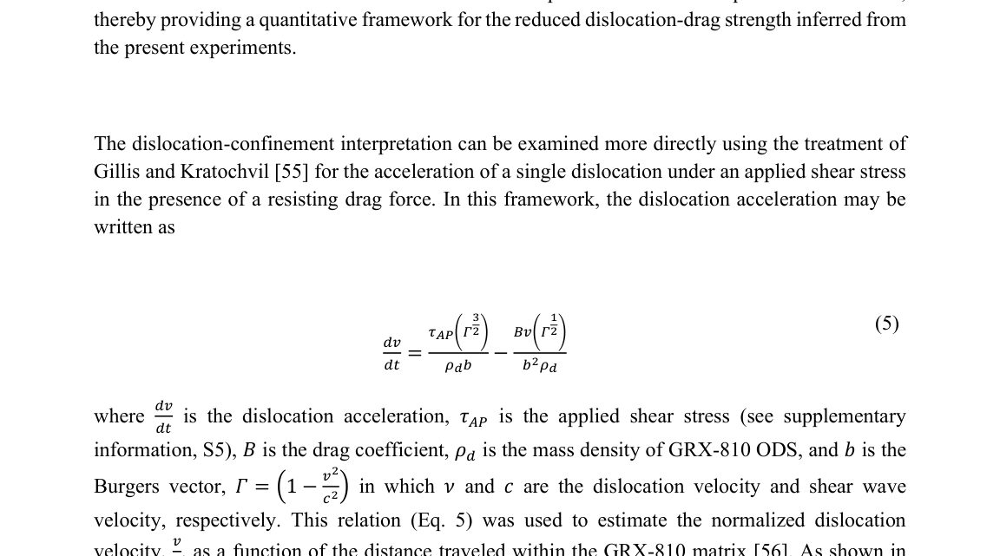
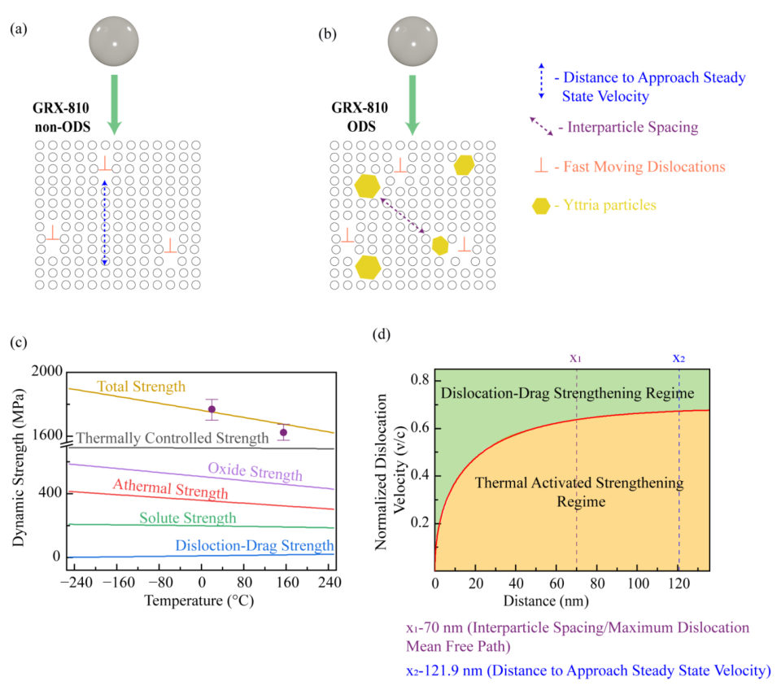
Main problem. Understanding the deformation mechanisms and dynamic strength of additively manufactured CrCoNi-based oxide-dispersion-strengthened (ODS) alloys under the coupled conditions of ultra-high strain rates and elevated temperatures.
Main result. The ODS variant exhibits significantly higher dynamic strength at ambient temperature due to athermal Orowan strengthening, but undergoes pronounced thermal softening at elevated temperatures because the oxide-particle network limits dislocation glide distance, suppressing the phonon-drag contribution.
Method. Laser-induced particle impact testing (LIPIT) using silica microparticles and high-speed videography, combined with a semi-empirical scaling model and a dislocation dynamics framework to decompose strength contributions.
Summary. This paper investigates how adding nanoscale yttria particles to a CrCoNi-based alloy affects its strength during ultra-high-speed impacts at high temperatures. While the particles provide extra strength at room temperature through the Orowan mechanism, they actually cause a larger drop in strength when heated because they prevent dislocations from moving long enough to benefit from phonon-drag effects. This research is crucial for designing materials for extreme environments like rocket engines.
Model / system. The physical system is an additively manufactured CrCoNi-based ODS-MPEA (GRX-810) containing yttria nanoparticles. The modeling uses a strength summation framework including thermal, athermal, solute, and dislocation-drag components, alongside the Gillis and Kratochvil framework for dislocation acceleration.
Key observables. Particle impact and rebound velocities, Coefficient of Restitution (CoR), dynamic yield strength, and grain size evolution.
Important parameters / regimes. Strain rates of 10^6 to 10^7 s^-1, temperatures of 20 C and 155 C, interparticle spacing of ~70 nm, and impact velocities of 80-210 m/s.
Assumptions / limitations. The oxide particles are assumed to be thermally stable without coarsening, and the impact response is modeled assuming elastic-perfectly plastic behavior of the substrate.
Figures summary. Fig 1 shows the LPBF fabrication and LIPIT setup; Fig 2 shows in situ high-speed images of particle impact and rebound; Fig 5d compares the required glide distance for drag development against the actual interparticle spacing.
Paper structure. The paper introduces the material and problem, describes the LIPIT experimental setup and fabrication, presents results for dynamic strength at different temperatures, develops a mechanistic model for dislocation-drag suppression, and concludes with the implications for extreme environment applications.
Deformation mechanisms in CrCoNi-based oxide-dispersion-strengthened multi-principal element alloys (CrCoNi-based ODS-MPEA) have been extensively studied under quasi-static and low strain rate loading over a wide temperature range, yet their behavior at high strain rates and elevated temperatures remains poorly understood. In this work, we investigate the high strain rate response of the CrCoNi-based ODS-MPEA alloy GRX-810 and its non-ODS variant. The ODS variant contains a high density of hexagonal yttria nanoparticles that serve as the strengthening oxide phase. At high strain rates and ambient temperature, GRX-810 ODS exhibits higher dynamic strength, approximately 2.79 times its quasi-static strength, than both conventional alloys and its non-ODS variant because of the additional athermal strengthening provided by the nanoscale oxide dispersion. At high strain rates and elevated temperatures, however, GRX-810 ODS undergoes thermal softening. This response is consistent with dislocation confinement associated with the small interparticle spacing of the oxide dispersion, which limits the phonon-drag contribution, together with the temperature-dependent reduction of elastic constants that lowers the athermal strengthening terms, including the oxide-related contribution. Additional weakening of the solute-pinning mechanism at elevated temperature further reduces the dynamic yield strength.
Authors: G. Lamura, T. Winyard, P. Gentile, M. Speight, F. Anger, B. Buchner, S. Wurmehl, T. Shiroka
Type: both · Category: strongly correlated electrons · PDF: https://arxiv.org/pdf/2604.23401v1
Analysis basis: full PDF text, analyzed in chunks
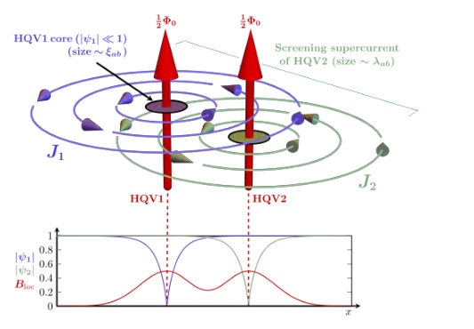
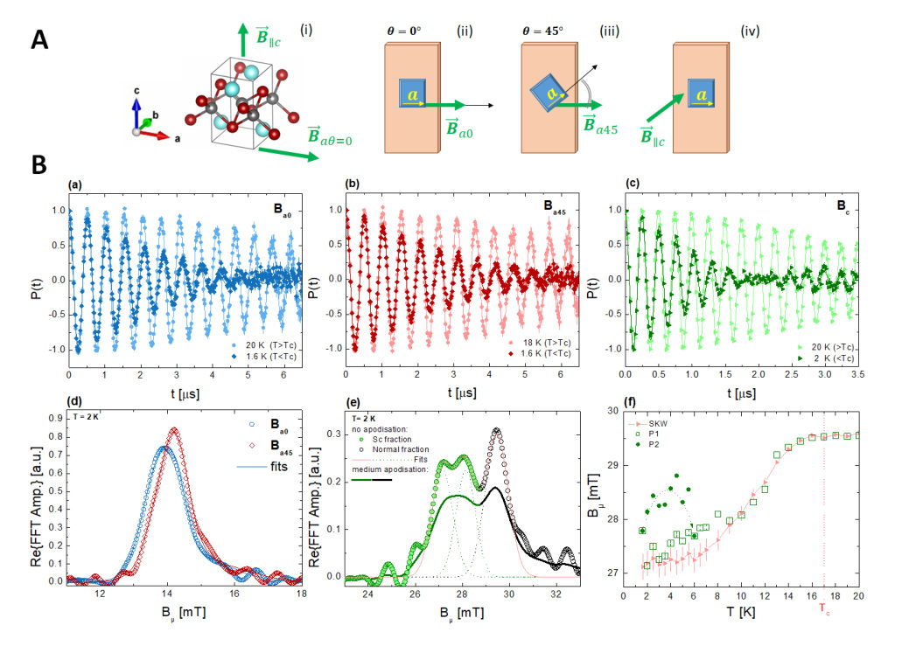
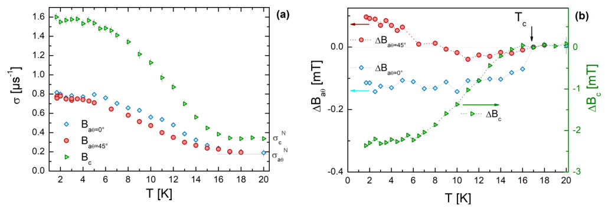
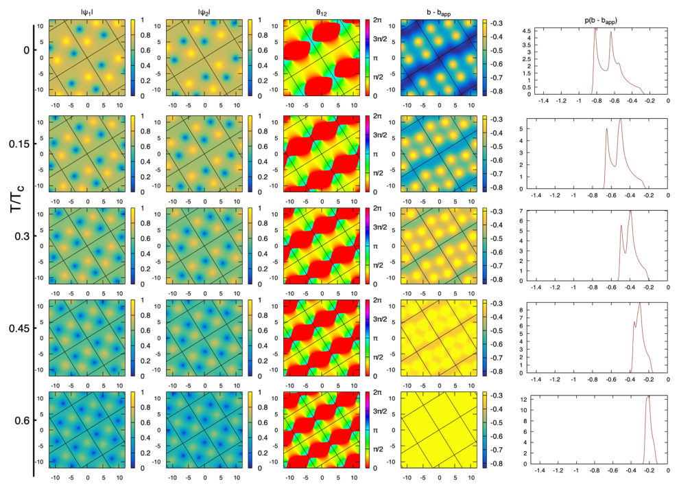
Main problem. The study seeks experimental evidence for unconventional, coreless (skyrmionic) vortex states in the bulk of the nematic superconductor LiFeAs.
Main result. Using muon-spin spectroscopy, the authors demonstrate an unconventional vortex lattice characterized by peak splitting in the magnetic field distribution, which evolves from a skyrmion chain phase to a standard Abrikostov lattice with increasing temperature.
Method. The researchers combine transverse-field muon-spin spectroscopy (TF-muSR) with Ginzburg-Landau numerical simulations using gradient descent and Newton flow methods to minimize Gibbs free energy.
Summary. This paper reports the discovery of an unconventional vortex lattice in the bulk superconductor LiFeAs. By analyzing muon-spin spectroscopy data, the authors find evidence of 'coreless' vortices, which are bound states of half-quantum vortices. They demonstrate that as temperature increases, these complex skyrmion chains transition into a conventional Abrikosov vortex lattice. This work provides a rare experimental glimpse into the complex topological textures possible in multi-component superconducting order parameters.
Model / system. The physical system is the nematic superconductor LiFeAs, modeled using a multi-component Ginzburg-Landau theory with a complex vector order parameter and strong spin-orbit coupling.
Key observables. Local magnetic field probability distribution p(B), depolarization rate (sigma), diamagnetic shift, and the topological winding number of the skyrmion field.
Important parameters / regimes. Temperature (1.6 K to 6 K), magnetic field orientation (parallel to a-axis, 45 degrees, and c-axis), and the superconducting gap (approx 2.01-2.57 meV).
Assumptions / limitations. The Ginzburg-Landau model is treated as an effective theory for qualitative predictions rather than precise quantitative accuracy; the simulation assumes a periodic lattice structure.
Figures summary. Figure 1 shows a schematic of coreless vortices; Figure 2 displays crystal structure and muSR configurations alongside peak splitting in the field distribution; Figure 4 presents contour plots of the skyrmion lattice solutions including order parameter magnitudes and local magnetic fields.
Paper structure. The paper introduces the problem of unconventional vortices, describes the LiFeAs system and muSR experimental setup, presents the observation of peak splitting and anisotropy, details the Ginzburg-Landau numerical modeling and simulation results, and concludes with the interpretation of the temperature-dependent phase evolution.
In the mixed state of type-II bulk superconductors, the magnetic field penetrates in the form of vortices enclosing one magnetic flux quantum: this is the conventional Abrikosov vortex lattice. Here, by using transverse muon-spin spectroscopy, we demonstrate the presence of an unconventional vortex lattice in LiFeAs single crystals. We also show evidence that the new mixed phase consists of stripes of "coreless" vortices, which are bound states of two spatially separated half-quantum vortices.
Authors: Katya Mikhailova, Lerato Takana, Guanxiong Qu, Juan A. Hofer, Hervé M. Carruzzo, Ivan K. Schuller, Clare C. Yu, Yuri Suzuki
Type: both · Category: other · PDF: https://arxiv.org/pdf/2604.24094v1
Analysis basis: full PDF text, analyzed in chunks
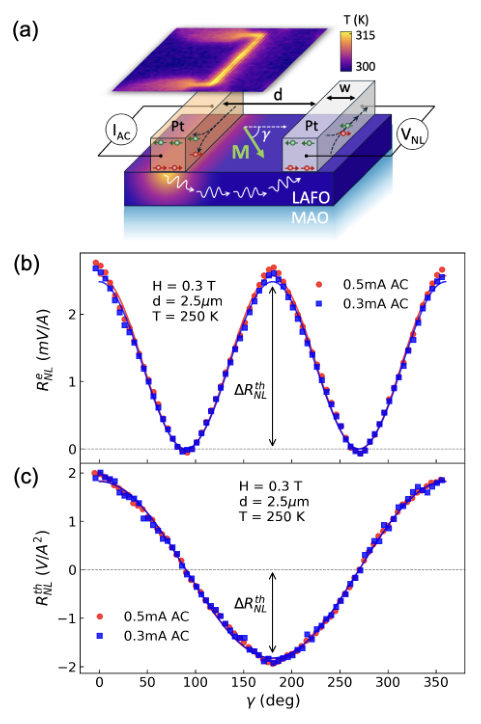
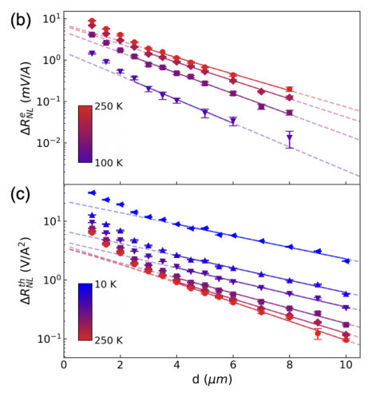
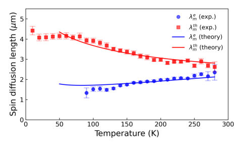
Main problem. The study aims to understand the distinct damping mechanisms and temperature-dependent trends of spin diffusion lengths (SDL) for electrically versus thermally generated magnons in low-damping LAFO thin films.
Main result. The researchers found that thermal SDL decreases with temperature due to magnon-phonon scattering, while electrical SDL increases with temperature because the scattering from magnetic impurities (modeled as two-level systems) weakens as they approach saturation.
Method. The study uses nonlocal transport measurements in Pt/LAFO devices, employing the Spin Hall Effect for electrical injection and the Spin Seebeck Effect for thermal generation, combined with mid-wave infrared microscopy for thermal mapping.
Summary. This paper investigates why different methods of generating magnons in LAFO thin films lead to opposite temperature dependencies in their spin diffusion lengths. By distinguishing between high-k (thermal) and low-k (electrical) magnon populations, the authors show that thermal magnons are limited by increasing phonon scattering, whereas electrical magnons are limited by impurity-driven scattering that decreases with temperature. This work provides a way to probe fundamental damping mechanisms in low-loss magnetic insulators, which are critical for future spintronic technologies.
Model / system. The physical system consists of Li0.5Al1.0Fe1.5O4 (LAFO) spinel ferrite thin films grown on MgAl2O4 substrates. The transport is modeled using a 1D magnon diffusion equation considering both magnon-number-conserving and non-conserving scattering channels.
Key observables. Spin diffusion length (SDL), nonlocal resistance amplitudes, Gilbert damping, and thermal decay length.
Important parameters / regimes. Temperature range (10 K to 280 K), film thicknesses (16 nm and 86 nm), and magnon energy cutoff (5.3 K).
Assumptions / limitations. The model assumes isotropic magnon dispersion, a 1D diffusion approximation, and that compressive strain from the substrate is the primary driver of easy-plane anisotropy.
Figures summary. The notes do not provide specific figure descriptions, but imply figures showing temperature-dependent SDL, thickness-dependent transport, and structural characterization via XRD.
Paper structure. The paper introduces the problem of magnon damping, describes the material growth and device fabrication, presents experimental transport and thermal imaging results, develops a theoretical diffusion model to explain the divergent SDL trends, and concludes with a comparison of scattering mechanisms.
The mechanisms underlying magnon damping are of fundamental and technological interest in low-damping materials. We find low-damping ferrimagnetic insulator Li$_{0.5}$Al$_{1.0}$Fe$_{1.5}$O$_4$ (LAFO) thin films to be a promising model system for probing these mechanisms because of its distinct temperature dependent spin diffusion length (SDL) trends for electrically and thermally generated magnons. With increasing temperature, the electrical SDL shows minimal change, while the thermal SDL decreases. We attribute these trends to distinct magnon populations and scattering mechanisms: thermally generated high $k$ magnons are limited by magnon-phonon scattering, whereas electrically generated low $k$ magnons are limited by relaxational scattering from magnetic impurities.
Authors: Yusuke Iguchi, Nabhanila Nandi, Mohamed Oudah
Type: experiment · Category: strongly correlated electrons · PDF: https://arxiv.org/pdf/2604.23117v1
Analysis basis: full PDF text, analyzed in chunks
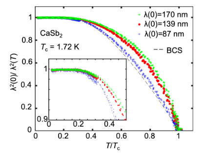
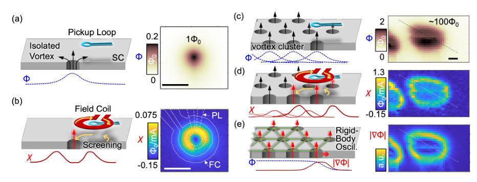
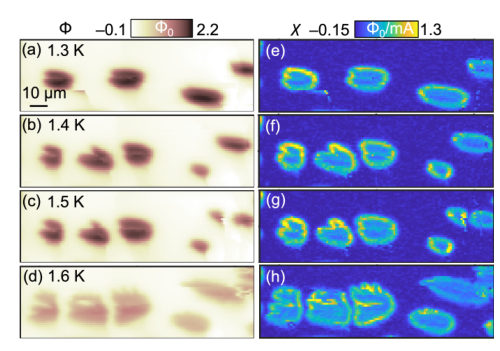
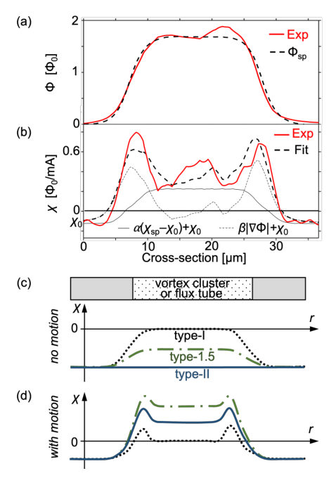
Main problem. Determining the origin of vortex clustering in the weak Type-II superconductor CaSb2 and whether it arises from intrinsic non-monotonic vortex-vortex interactions or disorder-induced pinning.
Main result. The study reveals dense vortex clusters with suppressed internal motion and enhanced susceptibility at the boundaries, indicating collective dynamics that cannot be explained by simple rigid-body motion or independent vortex models.
Method. Scanning SQUID susceptometry was used to simultaneously image local magnetic flux and local ac susceptibility at temperatures between 0.03 and 1.74 K.
Summary. This paper uses scanning SQUID microscopy to visualize the dynamics of vortex clusters in the superconductor CaSb2. The researchers found that vortices within clusters move differently at the edges compared to the interior, showing enhanced susceptibility at the boundaries. This behavior suggests complex, non-monotonic vortex interactions that challenge existing single-band superconductivity theories. The findings provide a new way to probe physics beyond the standard Ginzburg-Landau description of Type-II superconductors.
Model / system. The physical system is CaSb2, a weak Type-II superconductor with a non-symmorphic structure. The study uses a monopole model for isolated vortices and a linear superposition model for vortex clusters.
Key observables. Local magnetic flux (Phi), local ac susceptibility (chi), and the spatial derivative of flux (|grad Phi|).
Important parameters / regimes. Critical temperature Tc = 1.72 K; Ginzburg-Landau parameter kappa between 0.95 and 3.3; penetration depth lambda between 87 and 250 nm.
Assumptions / limitations. The magnetic susceptibility signal is assumed to be intrinsic rather than an artifact of mechanical vibrations or magnetic-induced cantilever motion.
Figures summary. Figures show temperature-dependent morphological changes in clusters (from compact to fragmented), comparison of flux profiles with monopole models, and simulated susceptibility maps for triangular vortex lattices.
Paper structure. The paper introduces the material and problem, describes the scanning SQUID experimental setup, presents the discovery of cluster dynamics, tests various motion models (rigid-body vs. independent), and performs a validation analysis against extrinsic noise sources.
Scanning SQUID imaging of CaSb$_2$ reveals dense vortex clusters with enhanced boundary susceptibility and suppressed internal vortex motion, which features inconsistent with both isolated vortex and flux tube behaviors. These measurements provide the first local visualization of magnetic dynamics within vortex clusters in a weakly pinned superconductor, offering a new route to probe non-monotonic vortex-vortex interactions that are typically expected in single-band type-II/1 or multiband type-1.5 superconductors. Although the superfluid density follows a single-gap BCS model and the Ginzburg-Landau parameter of CaSb$_2$ lies slightly outside the type-II/1 regime, vortex clustering and spatially inhomogeneous dynamics are clearly observed, indicating physics beyond existing microscopic theories for single-band superconductors.
Authors: Xiaodong Tian, Yan Lin, Hanbin Gao, Han Yu, Yunpeng Ma, Ruiqi Liang, Changfu Chen, Wei Li, Chenguang Deng, Qiang Zheng, Qian Li
Type: experiment · Category: other · PDF: https://arxiv.org/pdf/2604.23259v1
Analysis basis: full PDF text, analyzed in chunks
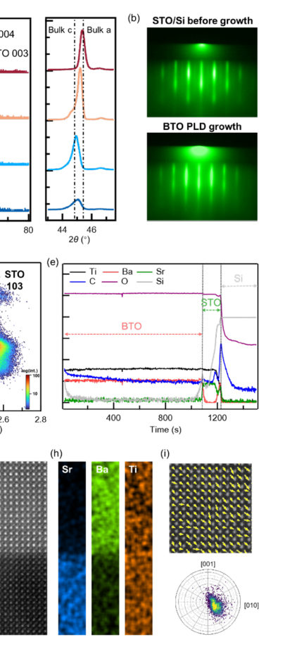
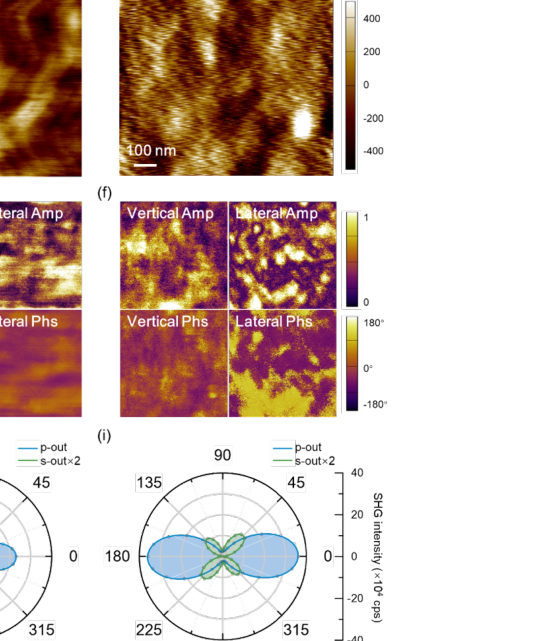
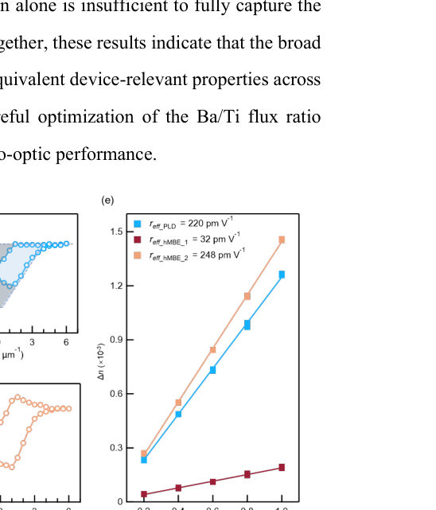
Main problem. Achieving scalable, high-quality, and uniform epitaxial growth of barium titanate (BTO) on 4-inch silicon wafers for integrated photonics, while overcoming challenges in stoichiometry control and slow growth rates.
Main result. Demonstrated continuous, wafer-scale growth of high-quality BTO on SrTiO3-buffered Si using hybrid molecular beam epitaxy (hMBE), achieving superior crystallinity and a larger effective electro-optic coefficient (248 pm/V) compared to PLD-grown films.
Method. A hybrid molecular beam epitaxy (hMBE) approach using titanium tetraisopropoxide (TTIP) as a metalorganic precursor, combined with Sr-passivation of Si(001) and atomic oxygen from an RF plasma source.
Summary. This paper presents a breakthrough in the scalable production of ferroelectric thin films for silicon photonics. By using a hybrid molecular beam epitaxy (hMBE) technique with a metalorganic titanium precursor, the researchers achieved high-quality, uniform BTO growth on 4-inch silicon wafers. The method provides much faster growth rates and better crystalline quality than traditional techniques like PLD. This advancement is crucial for developing next-generation, energy-efficient integrated photonic circuits.
Model / system. The experimental platform consists of BTO/SrTiO3/Si heterostructures grown on 4-inch Si(001) wafers, utilizing a self-regulating, adsorption-controlled growth regime.
Key observables. Effective electro-optic (EO) coefficient, growth rate, lattice parameters, surface roughness, domain configurations (a-domain vs. c-domain), and optical refractive indices.
Important parameters / regimes. Growth rate (>75 nm/h), TTIP/Ba flux ratio, temperature (600-800 C), and lattice mismatch/rotation (45 degrees).
Assumptions / limitations. The growth is governed by a self-regulating, adsorption-controlled mechanism where the growth rate is limited by the Ba flux.
Figures summary. The figures likely illustrate the growth process, RHEED patterns for in-situ monitoring, XRD mapping for wafer-scale uniformity, STEM images of the BTO/STO/Si interface, AFM/PFM for surface morphology and domains, and electro-optic response measurements.
Paper structure. The paper introduces the problem of BTO/Si integration, describes the hMBE experimental setup and precursor use, details the substrate preparation and growth process, compares hMBE with PLD/sputtering, analyzes structural and chemical properties, and concludes with the functional electro-optic performance.
The integration of epitaxial barium titanate (BTO) on silicon represents a highly promising pathway for next-generation, energy-efficient photonic integrated circuits due to BTO's exceptionally high Pockels coefficients. However, the scalable epitaxy of BTO on Si remains hindered by complex stoichiometric control and slow growth rates. In this work, we demonstrate the continuous, uniform wafer-scale growth of high-quality BTO films on SrTiO3 (STO)-buffered 4-inch Si(001) wafers using a fully hybrid molecular beam epitaxy (hMBE) approach. By utilizing titanium tetraisopropoxide as a titanium precursor, we achieve a self-regulating, adsorption-controlled layer-by-layer growth at rates exceeding 75 nm/h, while maintaining an atomically sharp and structurally coherent BTO/STO interface. We systematically compare the structural, ferroelectric, and electro-optic (EO) properties of fully hMBE-grown BTO with those deposited via pulsed laser deposition (PLD) on identical STO/Si templates. While both techniques yield high-quality c-domain dominated films, the optimized hMBE-grown BTO exhibits superior crystallinity and a larger effective EO coefficient of 248 pm/V, surpassing that of the PLD-grown films (220 pm/V). These results highlight the advantages of the fully hMBE approach as a scalable, deterministic, and high-performance materials platform for wafer-scale integrated ferroelectric photonics.
Authors: Zhonghao Xia, Michele Reticcioli, Yateng Wang, Yali Yang, Alessandro Stroppa, Jiangang He
Type: theory · Category: other · PDF: https://arxiv.org/pdf/2604.23328v1
Analysis basis: full PDF text, analyzed in chunks
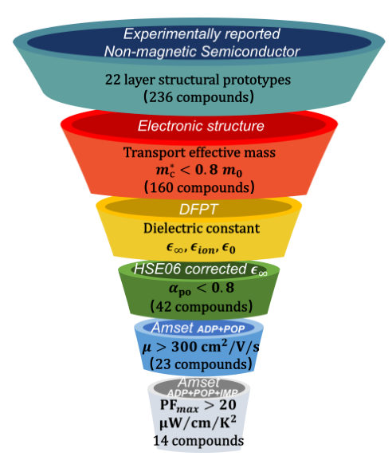
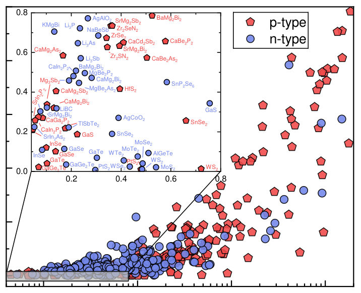
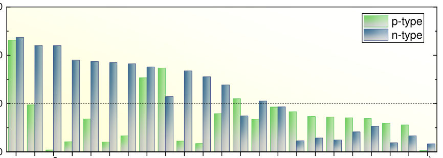
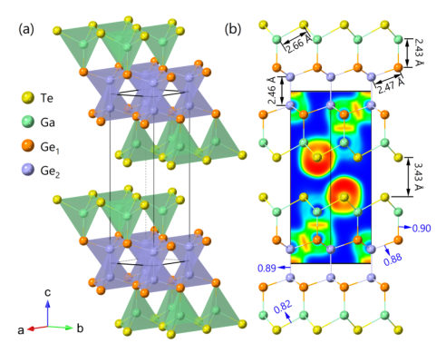
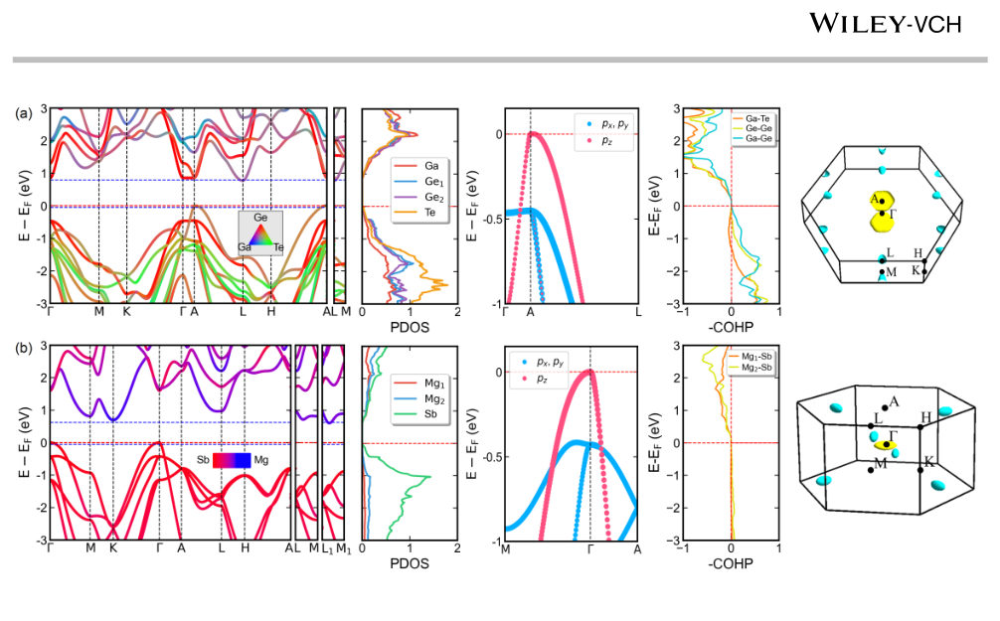
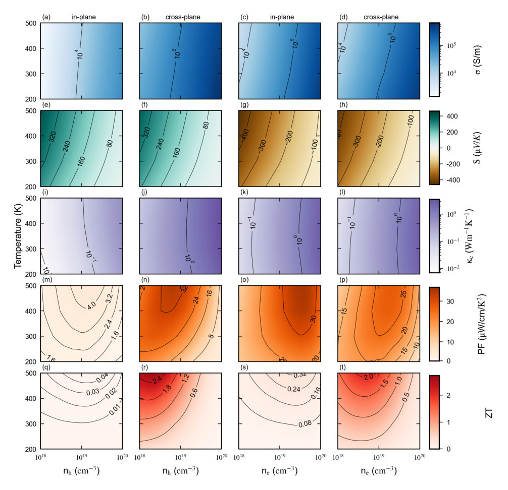
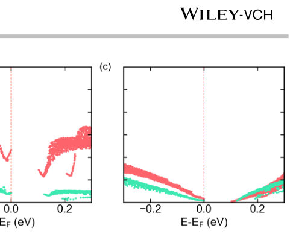
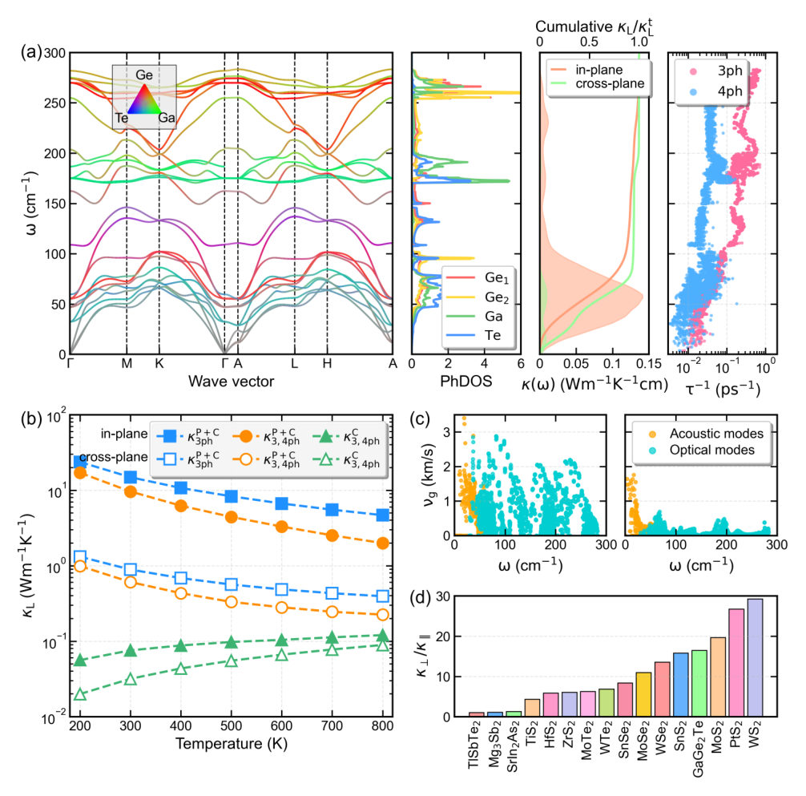
Main problem. The fundamental challenge in designing high-performance thermoelectric materials is the strong interdependence between electrical conductivity, Seebeck coefficient, and lattice thermal conductivity, particularly the trade-off between high mobility and low thermal conductivity in layered compounds.
Main result. The study identifies a strategy to decouple electron and phonon transport by suppressing polar optical phonon (POP) scattering through high covalency, highlighting GaGe2Te as a standout candidate with exceptionally high cross-plane power factor and ultralow thermal conductivity.
Method. High-throughput density functional theory (DFT) calculations using VASP and HSE06, combined with Boltzmann transport theory (BoltzTraP2, AMSET, Perturbo) and advanced phonon dynamics (FourPhonon, SCPH, CSLD).
Summary. This paper presents a computational strategy to design high-efficiency thermoelectric materials by breaking the link between electron and phonon transport. By screening hundreds of layered semiconductors, the authors found that minimizing the ionic dielectric constant can suppress polar optical phonon scattering, allowing for high carrier mobility. They identify GaGe2Te as a premier candidate that achieves both high electrical power factors and ultralow thermal conductivity due to its unique covalent bonding and structural anisotropy. This 'covalency engineering' approach provides a new pathway for discovering high-performance energy-harvesting materials.
Model / system. A high-throughput screening of 236 thermodynamically stable layered semiconductors, with a detailed focus on the layered van der Waals semiconductor GaGe2Te, which features a Ge bilayer and strong intralayer covalent bonding.
Key observables. Electrical conductivity, Seebeck coefficient, power factor (S^2sigma), lattice thermal conductivity, carrier mobility, and thermoelectric figure of merit (ZT).
Important parameters / regimes. Temperature of 300 K, carrier concentrations of 1e18 to 1e20 cm^-3, effective mass (m*), ionic dielectric constant (epsilon_ion), and Fröhlich coupling constant (alpha_po).
Assumptions / limitations. Calculations of electron transport were performed within the constant relaxation time approximation for certain components; phonon transport was treated as diffusive (particle-like).
Figures summary. The figures include scattering rate decompositions (total, long-range, and remainder), phonon dispersion and density of states, thermal conductivity spectra, and analysis of the ionic dielectric constant and bonding indices.
Paper structure. The paper begins with a high-throughput screening of 236 compounds, followed by a detailed investigation of the physical mechanism of POP scattering suppression, a specific case study of GaGe2Te's electronic and phononic properties, and a concluding discussion on the design principles for decoupling transport.
High-performance thermoelectric (TE) materials are crucial for efficient waste-heat recovery and solid-state cooling technologies. A persistent challenge in TE materials design arises from the strong interdependence among the electrical conductivity ($σ$), Seebeck coefficient ($S$), and lattice thermal conductivity ($κ_{\mathrm{L}}$). Layered compounds can effectively suppress $κ_{\mathrm{L}}$ along the cross-plane direction owing to weak interlayer interactions; however, they often suffer from low carrier mobility ($μ$) caused by limited band dispersion and strong polar optical phonon (POP) scattering. Here, we perform high-throughput density functional theory calculations to screen 236 layered semiconductors and identify candidates with low effective mass ($m^{*}$) and weak POP scattering. We identify 23 compounds with high cross-plane $μ$, among which 14 exhibit large power factors ($S^{2}σ$). Notably, GaGe$_{2}$Te stands out with exceptionally high cross-plane $σ$ and power factor, enabled by a favorable combination of small $m^{*}$ and a small ionic dielectric constant. Simultaneously, GaGe$_{2}$Te exhibits an ultralow cross-plane $κ_{\mathrm{L}}$ of 0.57~W~m$^{-1}$~K$^{-1}$ at 300~K, originating from weak interlayer bonding and pronounced phonon anharmonicity. These results demonstrate an effective strategy to decouple electron and phonon transport in layered materials by mitigating POP scattering, thereby providing a promising pathway toward high-performance thermoelectric materials.